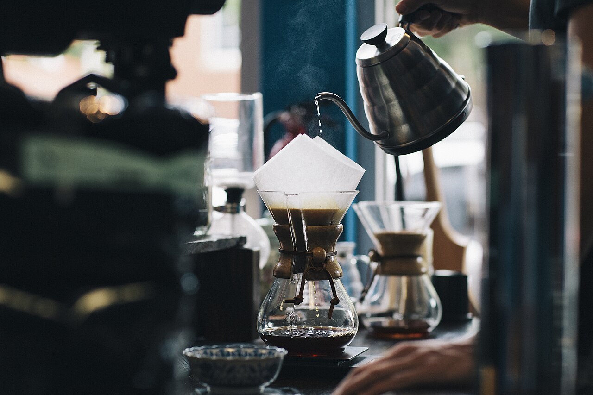

About
この店について
01
店名について
Brilliant は、英語で「輝かしい」「鮮やかな」を意味する言葉です。ここでは、その響きから「輝くような一杯を」というイメージを描いています。
店名の由来は店舗に確認しておらず、このイメージは当サイトが店名から連想したものです。公式の由来ではありません。
02
一杯ができるまで
コーヒーができるまでの、一般的な流れです。当店の工程ではありません。
01 豆
コーヒー豆は、焙煎されたものを使うのが一般的です。香りや味わいは、豆の種類や焙煎度合いによって変わります。
02 挽く
抽出の直前に豆を挽くと、香りが立ちやすいといわれます。挽き目は抽出方法に合わせて調整します。
03 抽出
お湯を使って、豆の成分を引き出します。ドリップやエスプレッソなど、方法はさまざまです。
04 カップへ
抽出したコーヒーをカップに注ぎ、完成です。

フリー素材のイメージ写真(当店の工程・店内ではありません)
以上は一般的な説明です。当店の豆・焙煎・淹れ方については、Instagramなどでご確認ください。
03
お店のこと
店主の想い、こだわり、豆の産地などは、貴店からご提供いただいた内容をここに掲載します。現在の詳細はInstagramでご覧ください。

フリー素材のイメージ写真(当店の店内・器具ではありません。貴店ご提供の写真に差し替えます)